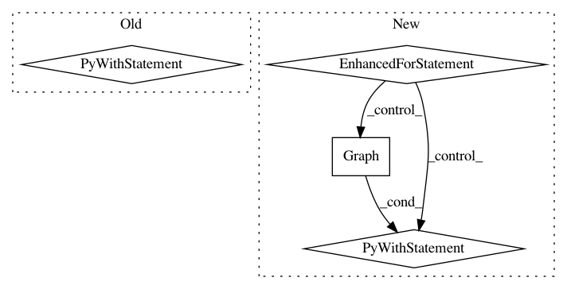

4f14cb629462c9e685ea92a961a80a8c5dcda83a,object_detection/meta_architectures/ssd_meta_arch_test.py,SsdMetaArchTest,test_postprocess_results_are_correct,#SsdMetaArchTest#,143
Before Change
self.assertTrue("num_detections" in detections)
init_op = tf.global_variables_initializer()
with self.test_session() as sess:
sess.run(init_op)
detections_out = sess.run(detections)
self.assertAllClose(detections_out["detection_boxes"], expected_boxes)
self.assertAllClose(detections_out["detection_scores"], expected_scores)
self.assertAllClose(detections_out["detection_classes"], expected_classes)
self.assertAllClose(detections_out["num_detections"],
expected_num_detections)
def test_loss_results_are_correct(self):
batch_size = 2
preprocessed_input = tf.random_uniform((batch_size, 2, 2, 3),
dtype=tf.float32)
After Change
[0, 0, 0, 0, 0]])
expected_num_detections = np.array([4, 4])
for input_shape in input_shapes:
tf_graph = tf.Graph()
with tf_graph.as_default():
preprocessed_input_placeholder = tf.placeholder(tf.float32,
shape=input_shape)
prediction_dict = self._model.predict(preprocessed_input_placeholder)
detections = self._model.postprocess(prediction_dict)
self.assertTrue("detection_boxes" in detections)
self.assertTrue("detection_scores" in detections)
self.assertTrue("detection_classes" in detections)
self.assertTrue("num_detections" in detections)
init_op = tf.global_variables_initializer()
with self.test_session(graph=tf_graph) as sess:
sess.run(init_op)
detections_out = sess.run(detections,
feed_dict={
preprocessed_input_placeholder:
np.random.uniform(
size=(batch_size, 2, 2, 3))})
self.assertAllClose(detections_out["detection_boxes"], expected_boxes)
self.assertAllClose(detections_out["detection_scores"], expected_scores)
self.assertAllClose(detections_out["detection_classes"], expected_classes)
self.assertAllClose(detections_out["num_detections"],
expected_num_detections)
def test_loss_results_are_correct(self):
batch_size = 2
preprocessed_input = tf.random_uniform((batch_size, 2, 2, 3),
dtype=tf.float32)
In pattern: SUPERPATTERN
Frequency: 3
Non-data size: 4
Instances
Project Name: tensorflow/models
Commit Name: 4f14cb629462c9e685ea92a961a80a8c5dcda83a
Time: 2017-07-18
Author: derekjchow@gmail.com
File Name: object_detection/meta_architectures/ssd_meta_arch_test.py
Class Name: SsdMetaArchTest
Method Name: test_postprocess_results_are_correct
Project Name: GPflow/GPflow
Commit Name: 2ea1cf911736def2bfefa9c18a2a7e70319b9b81
Time: 2017-09-27
Author: art.art.v@gmail.com
File Name: testing/test_ekerns.py
Class Name: TestExpxKxzActiveDims
Method Name: test_quad_active_dims
Project Name: tensorflow/models
Commit Name: 4f14cb629462c9e685ea92a961a80a8c5dcda83a
Time: 2017-07-18
Author: derekjchow@gmail.com
File Name: object_detection/meta_architectures/ssd_meta_arch_test.py
Class Name: SsdMetaArchTest
Method Name: test_predict_results_have_correct_keys_and_shapes